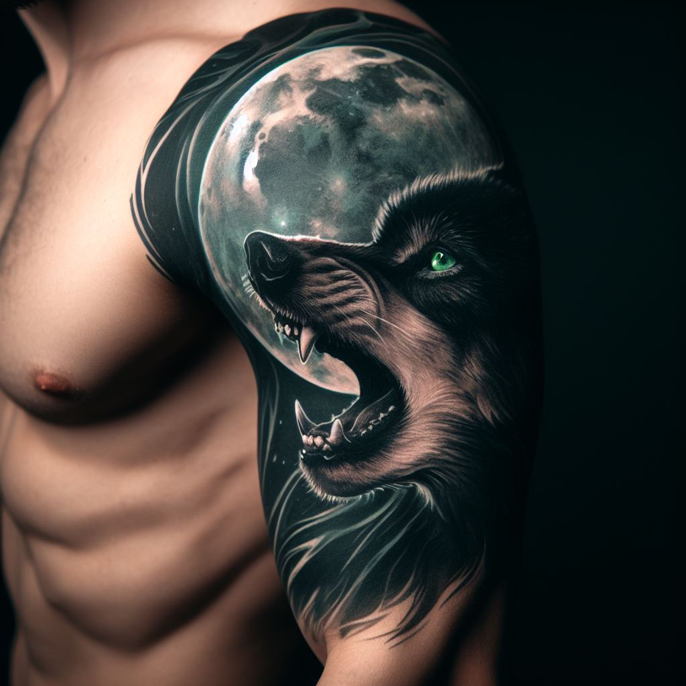

Exceptional Artistry
From opening my own studio to collaborating with fashion designers, my career has been a thrilling adventure, deeply enriched by each tattoo I have had the privilege to create. Mentoring talented apprentices has also been a gratifying experience, witnessing their growth and potential. I remain committed to providing the utmost professionalism, exceptional artistry, and a safe environment for your tattoo experiences. Please visit my website to view my evolving portfolio and stay connected.
About
- Exceptional Artistry: Lydia is widely known for her exceptional artistry and attention to detail. Her unique ability to create stunning and intricate tattoo designs has made her highly sought-after in the industry.
- Versatility: Over the years, Lydia has mastered various tattoo styles, including realism, traditional, and neo-traditional. This versatility allows her to cater to a wide range of client preferences and deliver customized designs that exceed expectations.
- Professionalism: Lydia prides herself on maintaining a high level of professionalism in her work. She ensures a safe and hygienic tattooing environment, strictly adheres to sterilization protocols, and prioritizes client satisfaction above all else.
Work
- Expanding Artistry Tattoo Studio (2022-Present): With a growing clientele and increased demand for her services, Ethan expanded her studio to accommodate more artists. She carefully selected talented artists who aligned with her passion for quality and client satisfaction, turning Artistry Tattoo Studio into a thriving hub of creativity and expertise.
- Mentored Apprentices (Year 2020-2022): Recognizing the importance of passing on her knowledge and skills, Ethan took several apprentices under her wing. She successfully mentored them, fostering their growth as artists and helping them establish their own careers. Some of her apprentices have gone on to become successful tattoo artists themselves.
- Collaborated with Fashion Designers (Year 2018-2020): Ethan's artistic flair caught the attention of fashion designers looking to incorporate unique tattoos into their runway shows and collections. She collaborated with renowned fashion houses, creating bespoke temporary tattoos for fashion models, which garnered significant media attention.